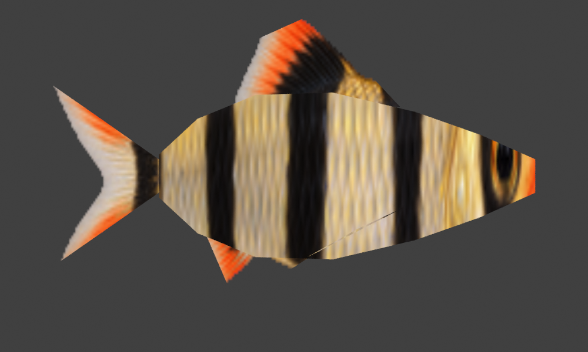
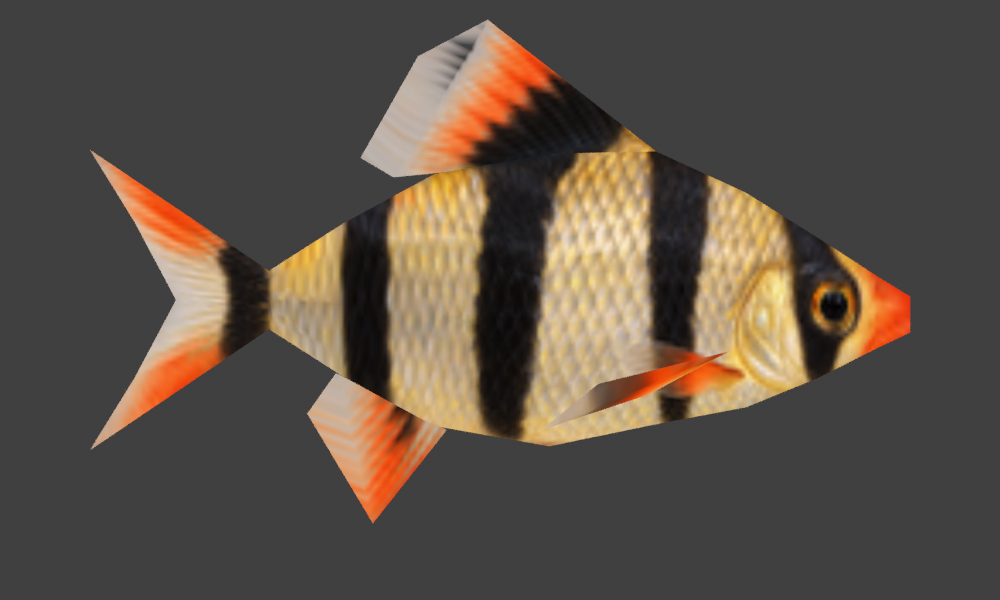
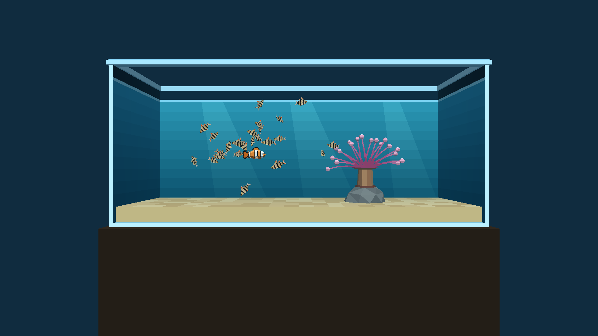
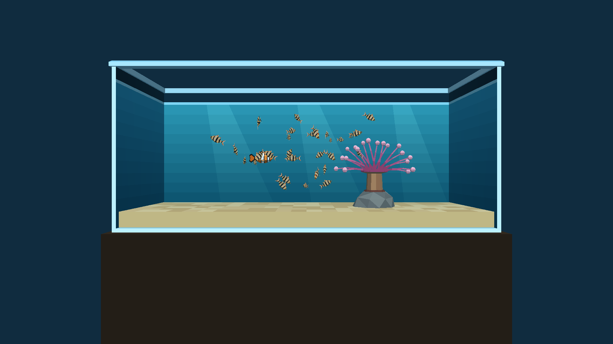

Same 29 followers, one mesh and actor each. Phase 3 refines the body, snout, tail fork and fin edges, and maps the eye and gill area without the previous vertical stretching. The rear-body swimming wave and school behavior are shared.


These are Blender previews using the production texture and exported UVs, without subdivision or smoothing. Compare actual Chromecast screenshots below.


Three presentation runs and one separate instrumented run per variant; 30 s warmup, five 12 s input segments. Identical native libraries; nested CPU scopes; PSS from the instrumented trace.
| Variant | FPS | p95 ms | Actor ms | School ms | Pose ms | Render ms | CPU ms | PSS MiB |
|---|---|---|---|---|---|---|---|---|
| B1 | 56.14 | 33.37 | 1.59 | 0.00 | 0.00 | 2.41 | 4.75 | 29.35 |
| B11 | 51.11 | 33.37 | 2.60 | 1.76 | 2.01 | 6.44 | 13.62 | 31.44 |
| P1 | 43.30 | 33.37 | 2.02 | 10.35 | 2.25 | 3.32 | 18.57 | 28.70 |
| P2-static | 37.29 | 50.05 | 1.99 | 10.14 | 2.23 | 7.12 | 22.10 | 29.46 |
| P2-animated | 36.78 | 50.05 | 2.02 | 10.25 | 2.72 | 7.19 | 22.80 | 31.24 |
| P3-static | 35.52 | 50.05 | 2.01 | 10.12 | 2.25 | 8.54 | 23.54 | 29.79 |
| P3-animated | 34.97 | 50.05 | 2.01 | 10.17 | 2.74 | 8.47 | 24.01 | 29.83 |